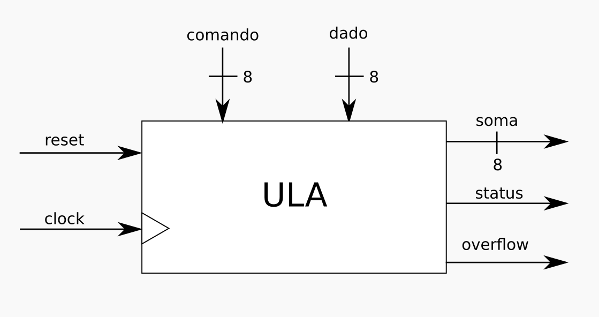
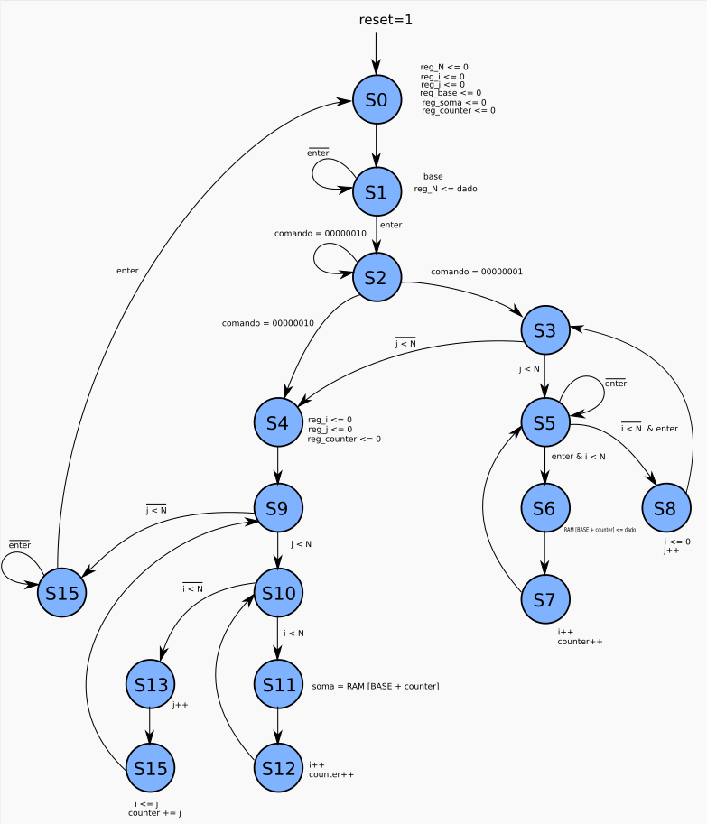
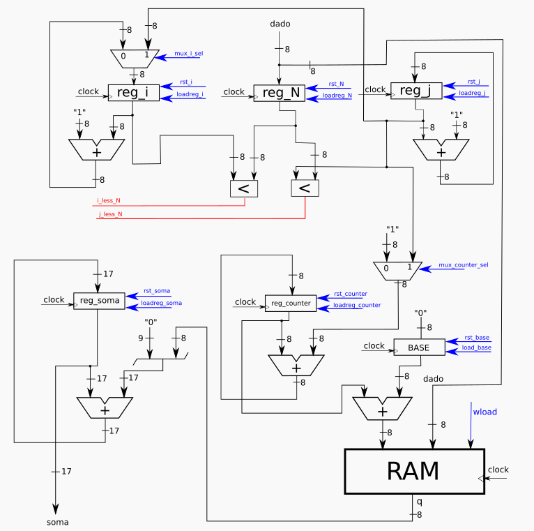
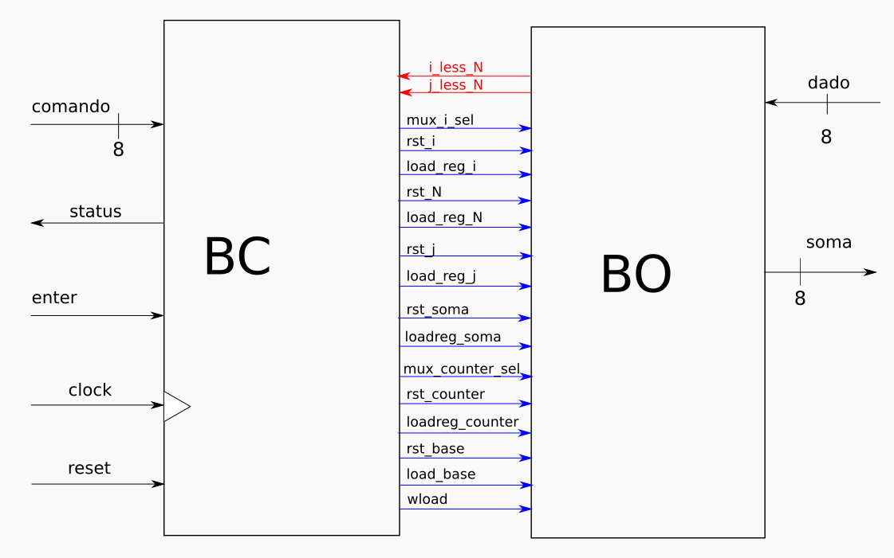
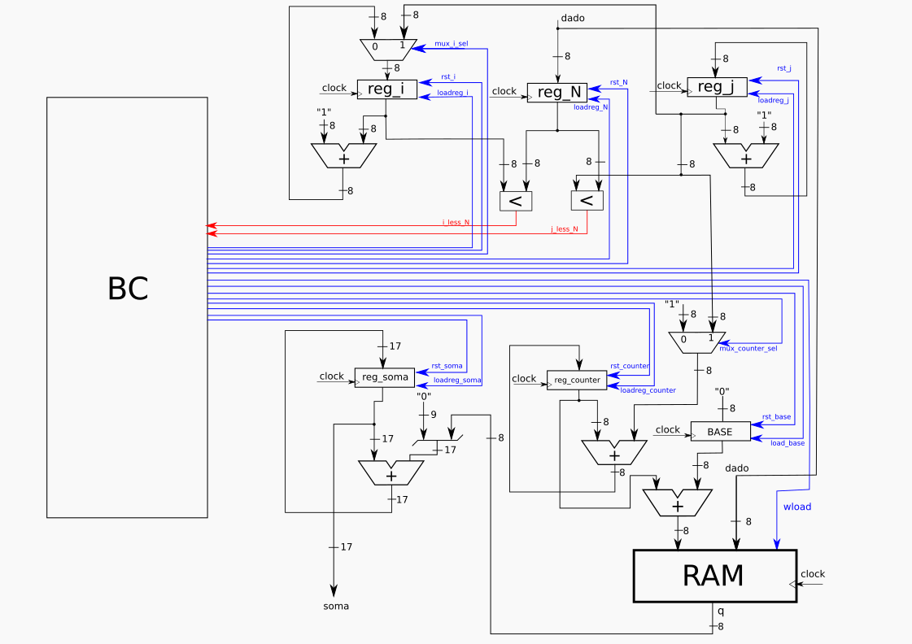

This project aims to develop a digital synchronous system that both stores and operate saved values, represented by integers, of a matrix of order N in RAM. Basically the purpose of this system is to perform the sum of the values above the main diagonal, including the values of the main diagonal, of a matrix of order N. The entire digital system for this project is described in VHDL, synthesized and prototyped in Altera's FPGA.
On the proposed digital system the “user” can inform an order of the matrix to be computed and the N matrix values. The storage of the values that make up a the matrix informed by the user will be given from a BASE address in memory, previously stipulated in the project design. When the calculation ends the result of the sum is made available.
Interface of the proposed digital system is shown in Fig. 1. The dado signal informs the order of the matrix also captures the values to be stored in memory. The soma sign returns the result of the sum made and the status signal represents the end of the sum.

The representation of the behavior of the system is given by the FSM shown in Fig. 2. The behavior was taken from the description in algorithm, already considering registers, operations and control flows.

All operations on the data, as well as the generation of state signals for control are described by the operational block represented in Fig. 3.

The conections between the control block and operational block diagrams that summarize a complete digital system can be observed in Fig. 4.

A diagram was built to map the all signals and can be seen in Figure 5. This mapping of the input and output signals of the control block is responsible for a more detailed view of the connection between the two blocks.
